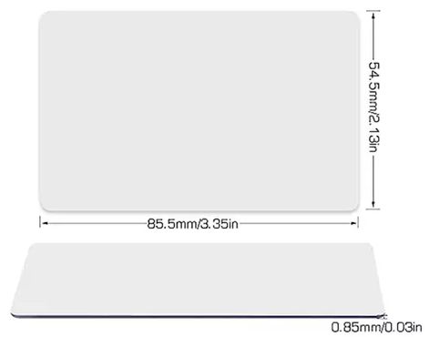

Descubre la tecnología que transformará la manera en que compartes, conectas y simplificas tu vida diaria.
Las tarjetas NFC de Gibra son mucho más que una simple herramienta; son la puerta de entrada a un mundo de
posibilidades, todas a un toque de distancia.
Especificaciones
Dimensiones: 85.6 mm x 54 mm (estándar tarjeta de crédito)
Material: PVC resistente
Compatibilidad: Compatible con la mayoría de teléfonos con NFC

Características Principales
Versatilidad Total: Configura tu tarjeta para compartir contactos, acceder a tu sitio
web, redirigir a tus redes sociales, conectar a Wi-Fi, activar rutinas en tu hogar inteligente y mucho
más.
Personalización Completa: Diseña tu tarjeta para reflejar tu estilo o la identidad de
tu marca. Ya sea para uso personal o profesional, nuestras tarjetas se adaptan a tus necesidades.
Fácil de Usar: No necesitas aplicaciones complicadas ni configuraciones extensas.
Simplemente acerca tu teléfono compatible y ¡listo! Tu contenido se despliega al instante.
Durabilidad y Estilo: Fabricadas con materiales de alta calidad, nuestras tarjetas NFC
son resistentes, elegantes y perfectas para cualquier ocasión.
¿Para quién es?
Empresas: Aumenta la interacción con tus clientes, comparte tu catálogo de productos, o
dirígelos a promociones exclusivas.
Personas Creativas: Comparte tu portafolio digital, tu música favorita, o tu perfil de
redes sociales con solo un toque.
Hogares Inteligentes: Automatiza tareas en tu hogar, controla dispositivos y mucho más,
todo desde una tarjeta.
Por qué elegir Gibra
En Gibra, creemos en la simplicidad y el poder de la conexión instantánea. Nuestras tarjetas NFC están
diseñadas para mejorar tu vida y hacer que cada interacción sea memorable y eficiente. Ya sea para tu
negocio o para uso personal, las tarjetas Gibra te ofrecen la tecnología del futuro, hoy.